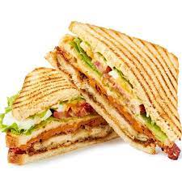

Centering your lunch on protein and deep green vegetables is the healthiest way to go. Fresh spinach, albacore tuna, chopped almonds, tomatoes and avocados with a low-calorie dressing is a delicious option to add to your lunch repertoire.
